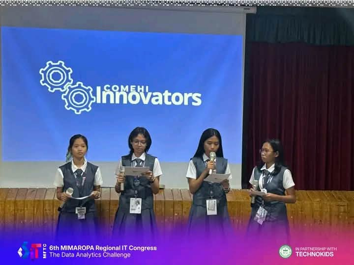
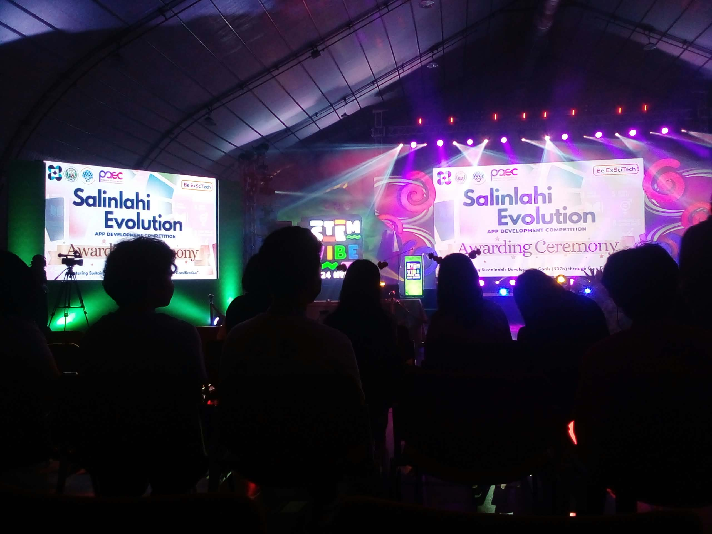
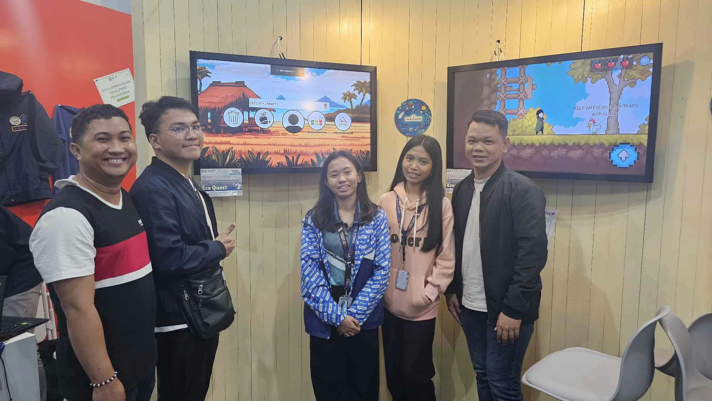
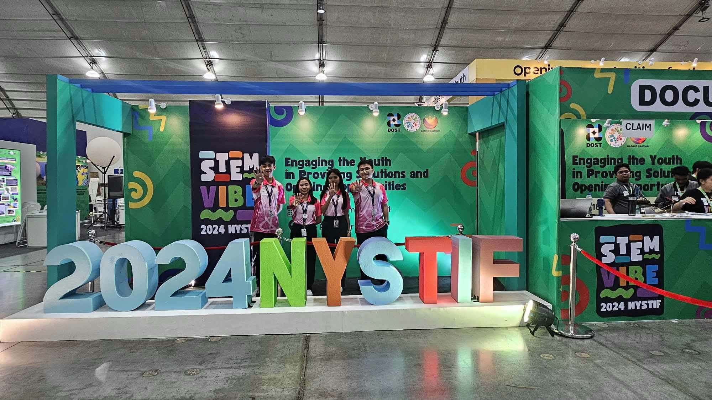

TEAM EXPERIENCE
Robotics Group
A member of my former school's Robotics Group, where I gained experience working with others and exploring technology.
A COLLECTION OF EXPERIENCES
Some of the projects, experiences, and accomplishments that have been part of my learning journey.

TEAM EXPERIENCE
A member of my former school's Robotics Group, where I gained experience working with others and exploring technology.

ACHIEVEMENT
Selected as one of the Top 10 Finalists in a national competition. An experience that encouraged me to continue learning and improving.

ROBOTICS PROJECT
A game about sorting trash with a maze, created with my groupmates in the Robotics Team.

ACADEMIC JOURNEY
Participated in several Science and Technology competitions under the Robotics Team.
These experiences have helped me appreciate teamwork, creativity, problem-solving, and continuous learning.